Optimización y Análisis de Redes
2026-10-12
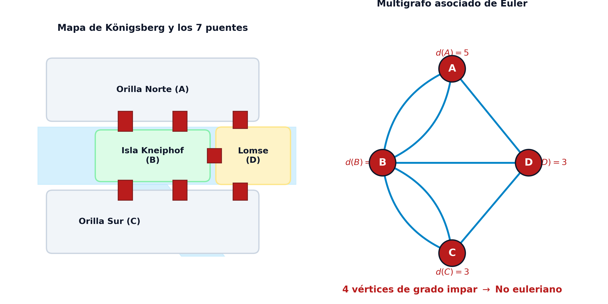
Definición: Recorridos eulerianos
Dado un multigrafo finito conexo no dirigido \(G = (V, E)\):
Condición necesaria y suficiente de Euler (1736, Hierholzer 1873)
Sea \(G = (V, E)\) un multigrafo finito y conexo:
Admite ciclo euleriano \(\iff\) Todos los vértices tienen grado par: \[ d(i) \equiv 0 \pmod 2, \quad \forall i \in V \]
Admite cadena euleriana abierta \(\iff\) Hay exactamente dos vértices impares (extremos inicial y final de la cadena).
| Vértices impares (\(|V_{\text{impar}}|\)) | Tipo de recorrido euleriano | Propiedades |
|---|---|---|
| \(0\) | Ciclo euleriano | Inicio y fin en cualquier vértice. |
| \(2\) | Cadena abierta | Inicia en un impar y termina en el otro. |
| \(\ge 4\) | No euleriano | Requiere duplicar aristas (CPP). |
| Impar (\(1, 3, \dots\)) | Imposible | Prohibido por el Handshaking Lemma. |
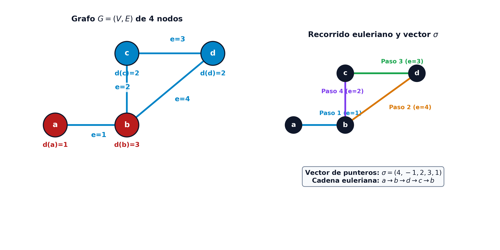
Vector final de punteros \(\mathbf{\sigma}\): \[ \mathbf{\sigma} = (4, -1, 2, 3, 1) \]
Decodificación secuencial:
Secuencia de aristas: \[ (1, 4, 3, 2) \]
Cadena de vértices: \[ a \xrightarrow{e=1} b \xrightarrow{e=4} d \xrightarrow{e=3} c \xrightarrow{e=2} b \]
Verificación:
Definición: Problema del Cartero Chino (CPP)
Dada una red valorada no dirigida \(G = (V, E, p)\) con pesos no negativos \(p(e) \ge 0\):
El CPP consiste en hallar un circuito cerrado \(C\) que recorra todas las aristas de \(E\) al menos una vez al menor coste total: \[ \min_{C} \sum_{e \in C} p(e) \quad \text{sujeto a} \quad E \subseteq C \]
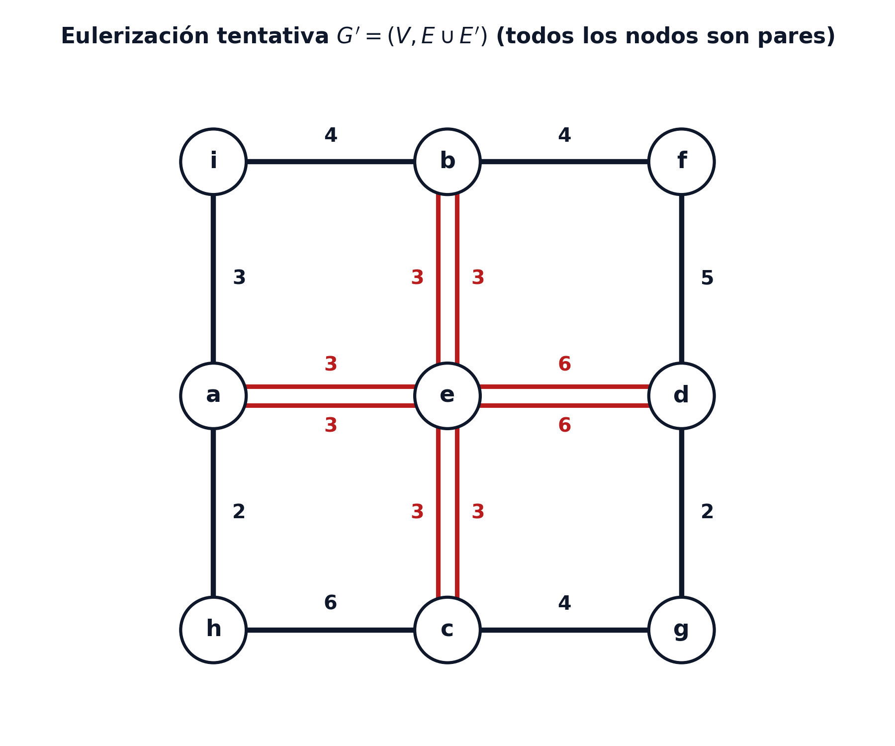
Paridad del número de vértices de grado impar
En cualquier multigrafo finito \(G = (V, E)\), el número de vértices con grado impar es estrictamente un número par (\(|V'| = 2k\)).
Estructura de caminos de las aristas duplicadas
Sea \(G = (V, E)\) un grafo no euleriano y sea \(E'\) un conjunto minimal de aristas duplicadas que convierte a \(G' = (V, E \cup E')\) en euleriano. Entonces, para todo \(i_1 \in V'\), el conjunto \(E'\) contiene una cadena que une \(i_1\) con otro vértice \(i_2 \in V'\).
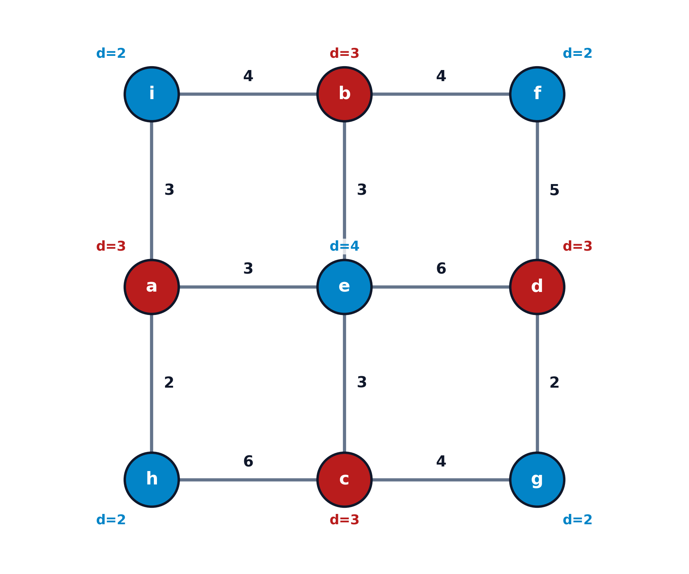
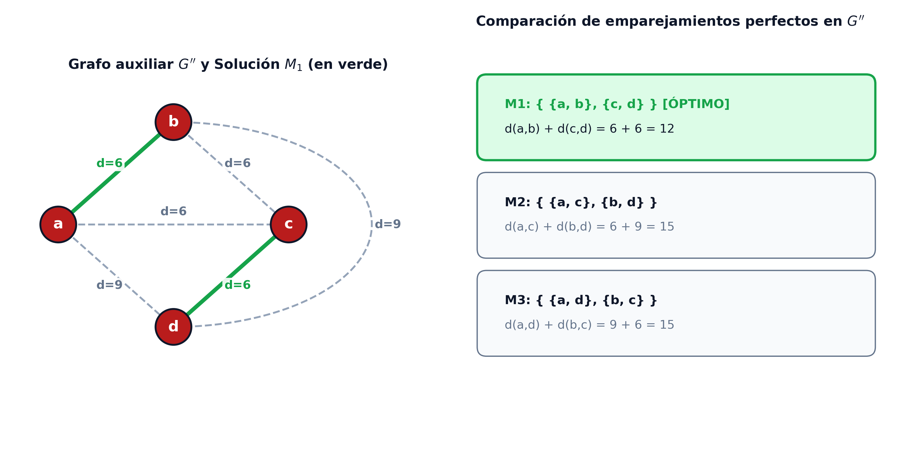
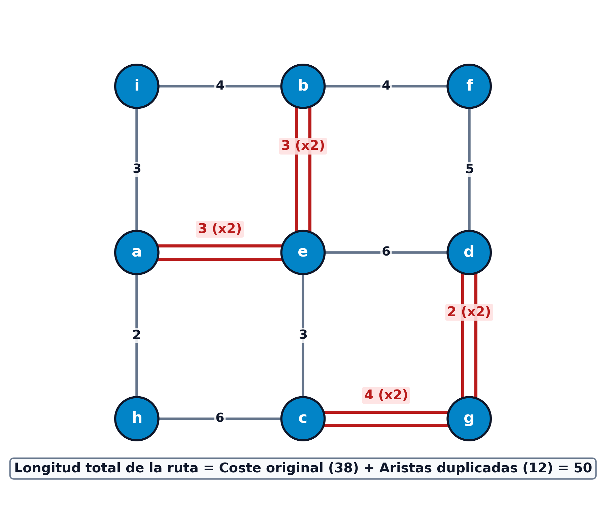
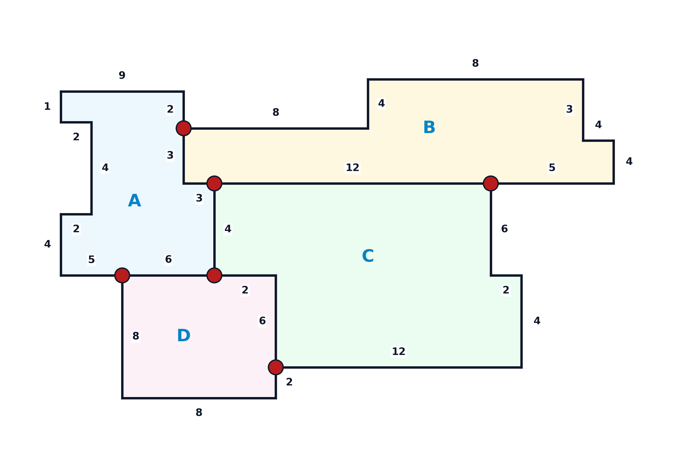
Paso 2 (Cálculo de distancias mínimas con Dijkstra):
Pareja 1 (Punto superior \(A\text{-}B\) a central \(A\text{-}B\text{-}C\)):
Pareja 2 (Punto inferior \(A\text{-}D\) a central \(A\text{-}C\text{-}D\)):
Pareja 3 (Extremos derechos: borde de \(B\text{-}C\) a borde de \(C\text{-}D\)):
Definición: Recorridos hamiltonianos
Dado un grafo \(G = (V, E)\) con \(n = |V|\) vértices:
Definición: Conjuntos de corte y k-conexidad
Dado un grafo conexo \(G = (V, E)\):
Condición necesaria de 2-conexidad
Si un grafo \(G = (V, E)\) es hamiltoniano, entonces \(G\) es obligatoriamente 2-conexo (no posee vértices de corte o puntos de articulación).
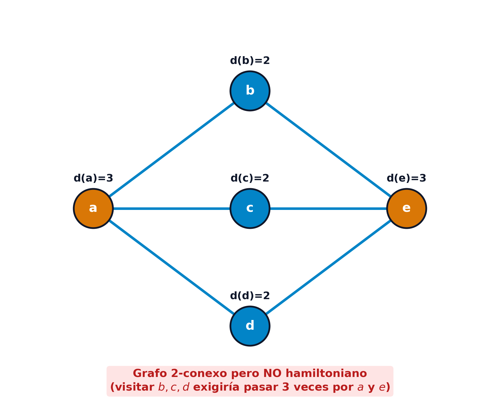
Proposición: Ciclos en grafos completos
Todo grafo simple completo \(K_n\) con \(n \ge 3\) es hamiltoniano y contiene exactamente: \[ \frac{(n-1)!}{2} \] ciclos hamiltonianos distintos no orientados.
Proposición de adyacencia de Bondy y Chvátal (1976)
Sea \(G = (V, E)\) un grafo con \(n \ge 3\) vértices y sean \(s, t \in V\) dos vértices no adyacentes con: \[ d_G(s) + d_G(t) \ge n \] Se define \(G + \{s, t\} = (V, E \cup \{\{s, t\}\})\). Entonces: \[ G \text{ es hamiltoniano} \iff G + \{s, t\} \text{ es hamiltoniano} \]
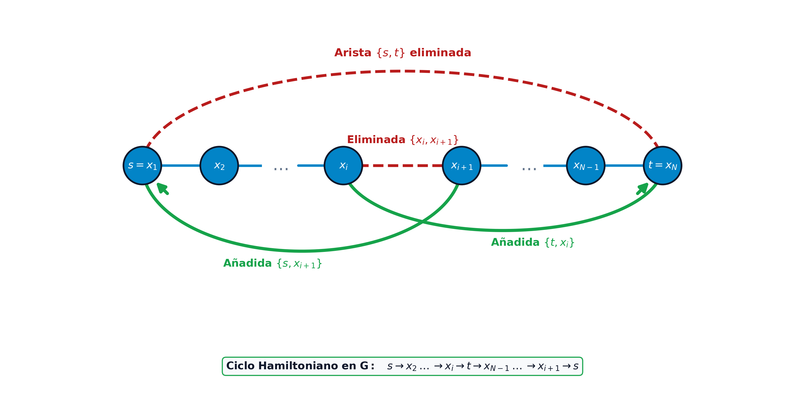
Definición: Clausura de un grafo (Bondy y Chvátal 1976)
Dado un grafo simple \(G = (V, E)\) con \(n\) vértices, la clausura \([G]\) es el grafo obtenido al añadir recursivamente aristas entre parejas no adyacentes \(u, v\) que cumplen: \[ d(u) + d(v) \ge n \] hasta que no sea posible añadir ninguna arista más. La clausura \([G]\) es única e independiente del orden.
Teorema de Bondy y Chvátal (1976)
Un grafo simple \(G\) es hamiltoniano si y solo si su clausura \([G]\) es hamiltoniana. En particular, si \([G] = K_n\), entonces \(G\) es hamiltoniano.
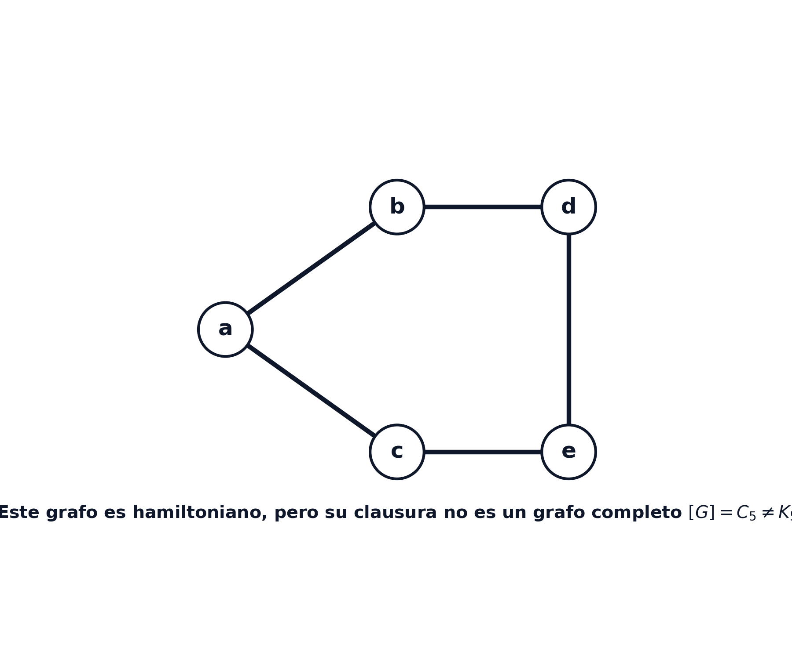
| Criterio | Condición evaluada | Exigencia topológica | Complejidad |
|---|---|---|---|
| Dirac (1952) | \(\min_{v} d(v) \ge n/2\) | Muy alta (grafo denso uniforme) | \(\mathcal{O}(|V|)\) |
| Ore (1960) | \(d(u) + d(v) \ge n\) | Alta (pares no adyacentes) | \(\mathcal{O}(|V|^2)\) |
| Bondy-Chvátal (1976) | \([G] = K_n\) | Máxima potencia deductiva | \(\mathcal{O}(|V|^3)\) |
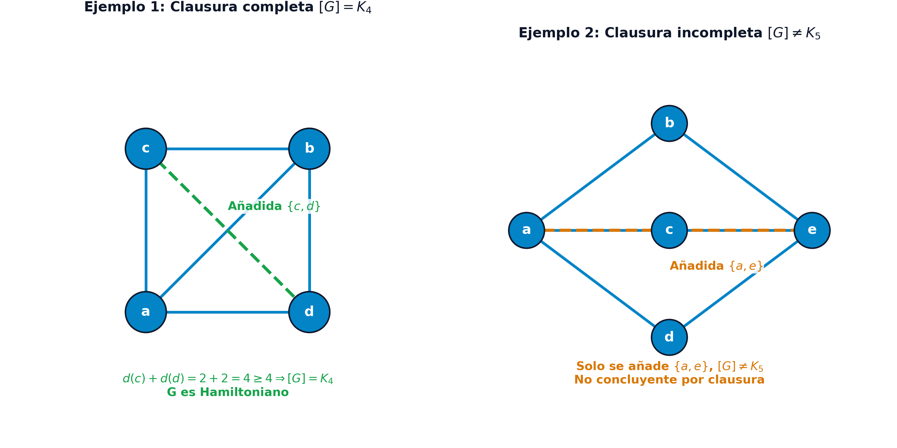
Concepción del recorrido:
Variables de decisión tridimensionales: \[ x_{ijk} = \begin{cases} 1 & \text{si el agente va directamente de } i \text{ a } j \text{ en la etapa } k \\ 0 & \text{en otro caso} \end{cases} \] para todo \(i, j, k \in \{1, \dots, n\}\).
Dimensión: Requiere \(n^3\) variables binarias.
\[ \begin{aligned} \min_{x} \quad & \sum_{i=1}^n \sum_{j=1}^n \sum_{k=1}^n d_{ij} x_{ijk} \\ \text{s.a.} \quad & \sum_{j, k} x_{ijk} = 1, \ \forall i; \quad \sum_{i, k} x_{ijk} = 1, \ \forall j \\ & \sum_{i, j} x_{ijk} = 1, \ \forall k; \quad \sum_{i \ne j} x_{ijk} = \sum_{l \ne j} x_{j, l, k+1}, \ \forall j, k \\ & x_{ijk} \in \{0, 1\}, \quad \forall i, j, k = 1, \dots, n \end{aligned} \]
Variables de decisión de arco: \[ x_{ij} = \begin{cases} 1 & \text{si el arco dirigido } (i, j) \text{ forma parte de la ruta} \\ 0 & \text{en otro caso} \end{cases} \quad \forall i \ne j \]
Restricciones de grado del problema de asignación:
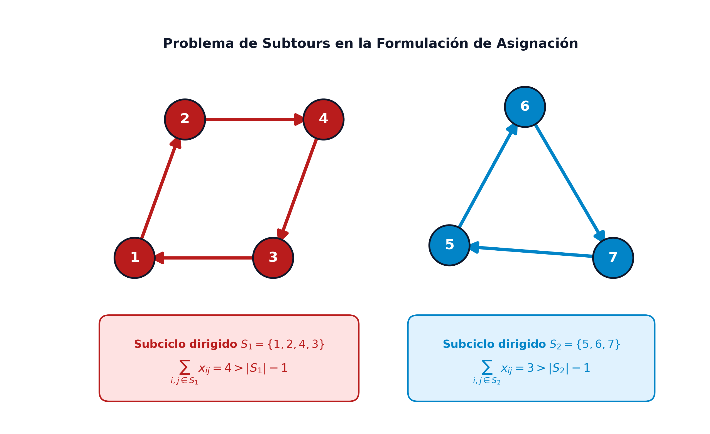
Restricciones de eliminación de subciclos (SEC DFJ 1954)
Para todo subconjunto propio no vacío \(S \subset V\) con \(2 \le |S| \le n-1\): \[ \sum_{i \in S} \sum_{j \in S} x_{ij} \le |S| - 1 \]
\[ \begin{aligned} \min_{x} \quad & \sum_{i=1}^n \sum_{j=1}^n d_{ij} x_{ij} \\ \text{s.a.} \quad & \sum_{j=1, j \ne i}^n x_{ij} = 1, \quad \forall i = 1, \dots, n \\ & \sum_{i=1, i \ne j}^n x_{ij} = 1, \quad \forall j = 1, \dots, n \\ & \sum_{i \in S} \sum_{j \in S} x_{ij} \le |S| - 1, \quad \forall S \subset V, \ 2 \le |S| \le n-1 \\ & x_{ij} \in \{0, 1\}, \quad \forall i, j = 1, \dots, n, \ i \ne j \end{aligned} \]
Restricciones de orden MTZ (1960)
\[ u_i - u_j + n x_{ij} \le n - 1, \quad \forall i, j \in \{2, \dots, n\}, \ i \ne j \]
\[ \begin{aligned} \min_{x, u} \quad & \sum_{i=1}^n \sum_{j=1}^n d_{ij} x_{ij} \\ \text{s.a.} \quad & \sum_{j=1, j \ne i}^n x_{ij} = 1, \quad \forall i = 1, \dots, n \\ & \sum_{i=1, i \ne j}^n x_{ij} = 1, \quad \forall j = 1, \dots, n \\ & u_i - u_j + n x_{ij} \le n - 1, \quad \forall i, j \in \{2, \dots, n\}, \ i \ne j \\ & u_i \ge 0, \ \forall i \ge 2; \quad x_{ij} \in \{0, 1\}, \ \forall i \ne j \end{aligned} \]
| Característica | Modelo DFJ (1954) | Modelo MTZ (1960) |
|---|---|---|
| Variables de decisión | \(n(n-1)\) binarias | \(n(n-1)\) binarias + \(n-1\) continuas |
| Número de restricciones | \(2^n - 2\) (exponencial) | \(n^2 - n + 2\) (polinomial) |
| Relajación lineal continua | Muy fuerte y ajustada | Significativamente débil |
| Técnica de resolución | Branch-and-Cut (cortes dinámicos) | Solver MIP directo estándar |
| Escalabilidad práctica | Decenas de miles de ciudades | Cientos de ciudades |
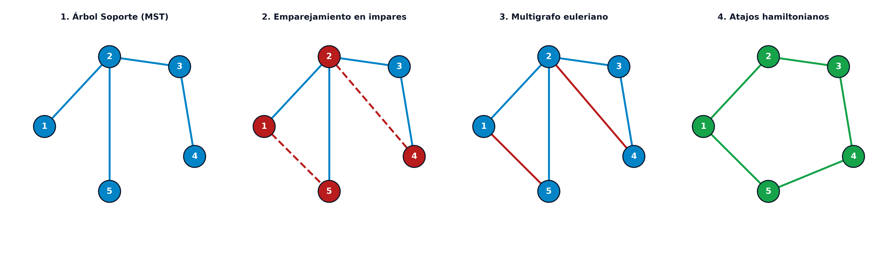
Garantía de factor 1.5 de Christofides (1976)
En cualquier grafo métrico (con desigualdad triangular): \[ \text{Coste}(C_{\text{Christofides}}) \le \frac{3}{2} \text{Coste}(C^*) \]
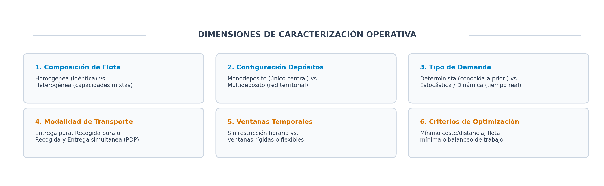